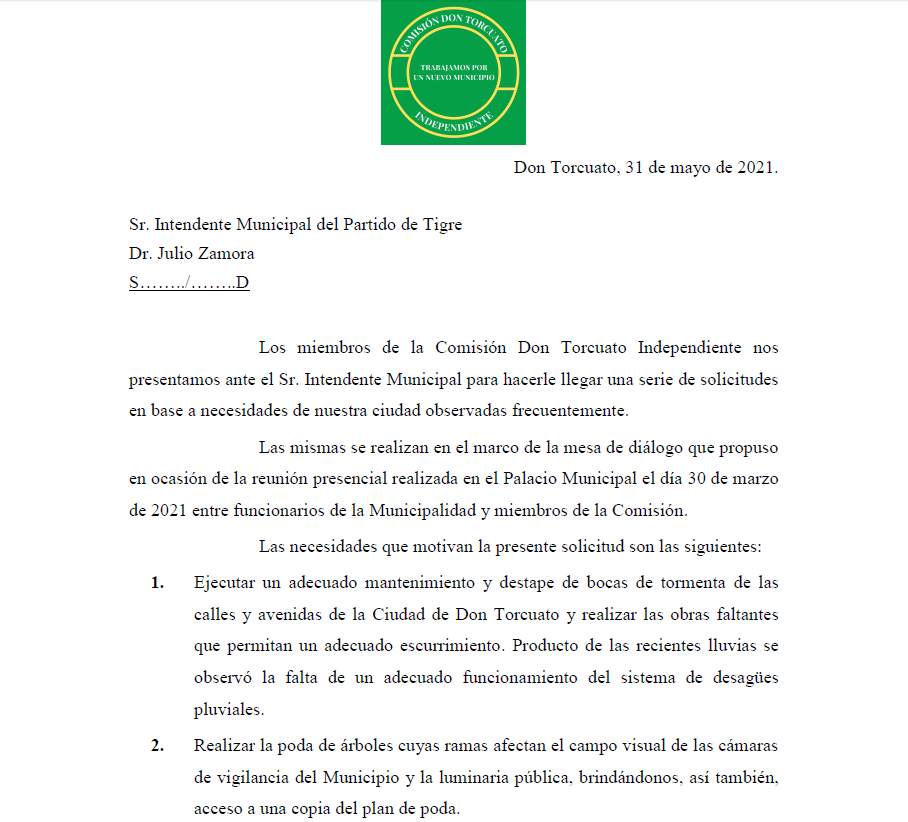
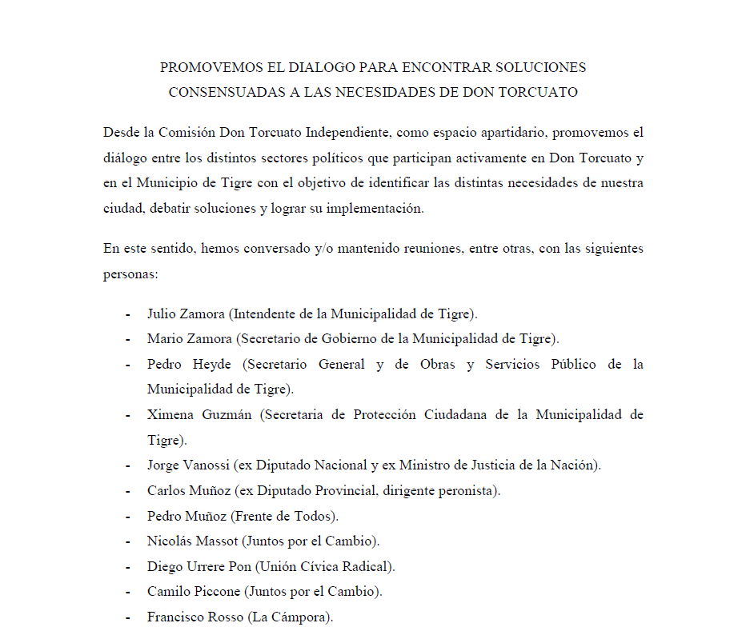
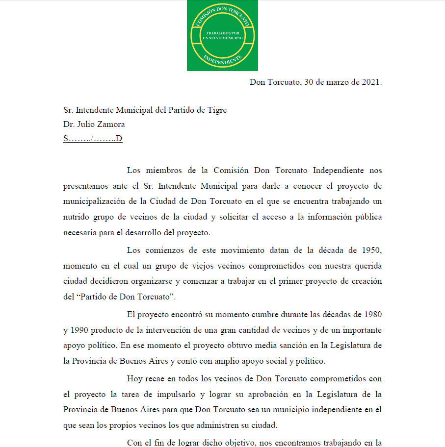
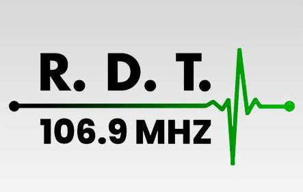
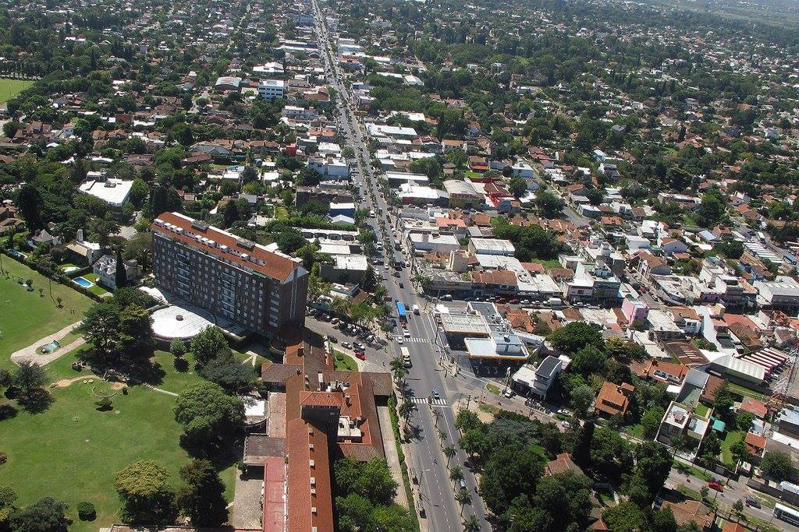
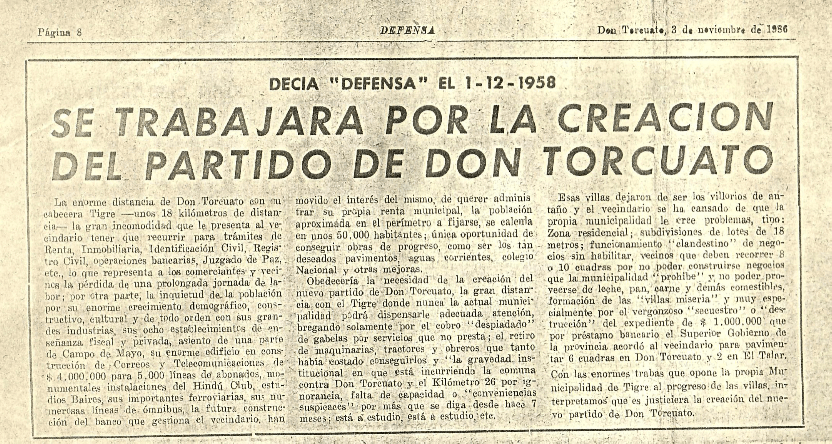

¿Quiénes Somos?
Diez Razones
Preguntas Frecuentes
Contactanos
Novedades

Solicitudes al Municipio de Tigre.
Comisión Don Torcutato Independiente -
31/05/2021

Promovemos el diálogo para encontrar soluciones consensuadas a las necesidades de Don Torcuato
Comisión Don Torcutato Independiente -
18/05/2021

Solicitud de información pública al Municipio de Tigre
Comisión Don Torcutato Independiente -
30/03/2021

Entrevista Radial FM Don Torcuato
Publicado:
FM Don Torcuato 106.9
La Comisión Don Torcuato Independiente avanza a paso firme con el proyecto de transformar a Don Torcuato en un nuevo municipio.
Publicado:
Revistas Brisas - Marzo 2021
Entrevista Radial FM Don Torcuato
Publicado:
FM Don Torcuato 106.9 - 24/03/2021

Entrevista con El Medio
Publicado:
En el medio - 12/02/2021

Avanza a paso firme con el proyecto de transformar a Don Torcuato en un nuevo municipio
Publicado:
Norte Online - 07/02/2021
El sueño de un Don Torcuato independiente
Publicado:
Norte Online - 17/01/2021